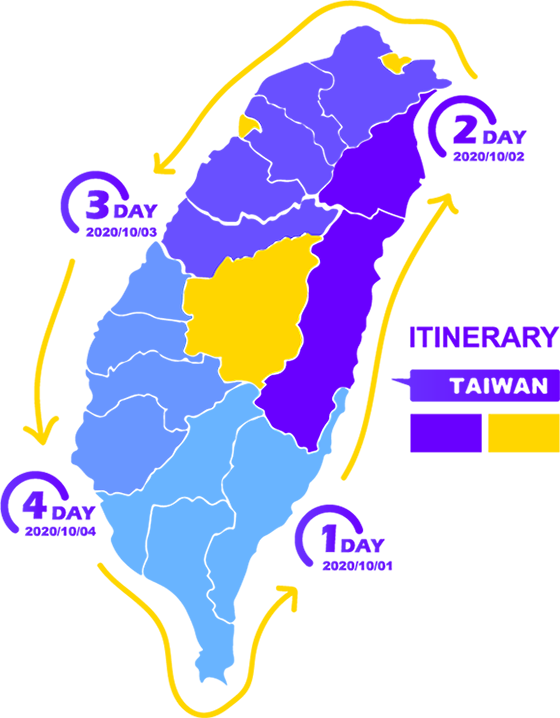

4 DAYS
Round Island Project
in TAIWAN
GO to traveled around Taiwan.
台灣雖然不大但卻有著豐富多元的景色、文化及濃濃的各地人情味，是一個非常適合環島的地方，總是在腦中思考，但從小到大卻都不曾執行，於是趁著2020年的中秋，決定完成人生清單中的一項，四天的騎車環島。
Although Taiwan is not big, it has a rich and diverse scenery, culture and strong personal feelings everywhere. It is a place that is very suitable for round the island. It is always thinking in the mind, but it has not been implemented since childhood, so it took advantage of 2020 Mid-Autumn Festival, decided to complete one of the life list, four days of cycling around the island.

DAY 1
2020/10/01
台東-宜蘭
台東市出發 > 台東池上 > 花蓮市區午餐 > 宜蘭南澳海灘 > 住宿check in > 羅東夜市
DAY 2
2020/10/02
宜蘭-台中
宜蘭市出發 > 北宜公路 > 台北市區午餐 > 司馬庫斯 > 火炎山 > 住宿check in > 一中街
DAY 3
2020/10/03
台中-台南
台中市出發 > 嘉義阿婆灣 > 嘉義市區午餐 > 台南景點 > 住宿check in > 花園夜市
DAY 4
2020/10/04
台南-台東
台南市出發 > 高雄市 > 墾丁午餐 > 墾丁旭海 > 行程結束